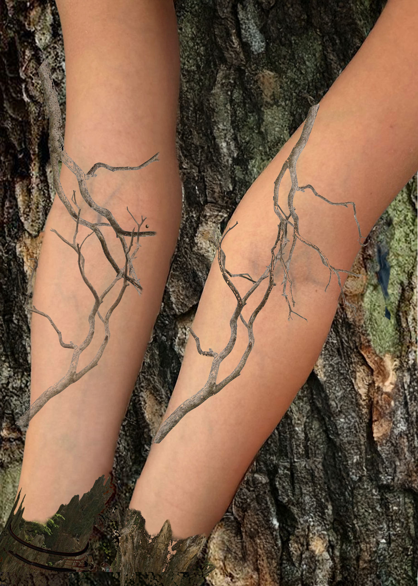

My photomontage image had through photoshop depicts pair of arms that are streched out and facing up with
the background of tree bark and tree branches and roots intertwining with the arms. Through my image I aimed to
depict our relationship as humans to the earth. We come from the earth we have evolved from the earth. Our bodies are from
this earth and we have characterisic tha resemble such. This specific concept of tree branches and viens being like one is
something I have been pondering over and examining for a few years. I have always though our bodies have a specical connection
to the nature around us and effects our lives.
Our relationship to this earth is extemely rocky and often and parasitic relationship, we take what we can get but rarly ever give back.
With natrual resources running thin and fossil fules burning our home we have begun to destory this thing we have been born from. Through this
photomontage I used techniques such as blending to give the branches a more natrual and fading feel to blend into the arm and I used
layering to create the tree branch viens. I grouped together the branches and the tree roots to keep track of all the moving parts.